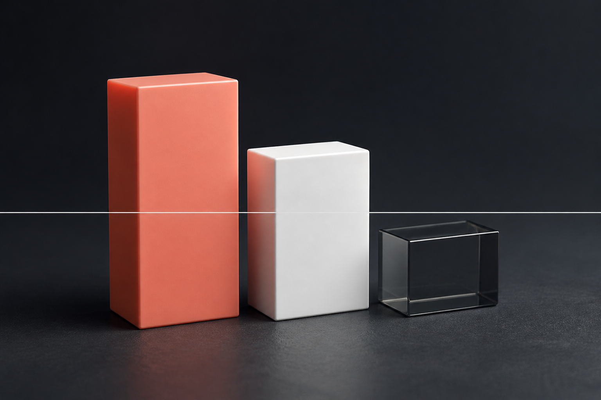

이익률 21.9%의 뜻 — 3분기 소상공인 리포트를 12월 광고 예산으로 옮기는 계산
2026년 3분기 소상공인은 매출 -4.36%, 이익 -8.30%였습니다. 이익률 21.9%를 손익분기 광고비로 바꾸는 식과, 12월에 줄일 항목과 남길 항목을 가르는 기준을 정리했습니다.

3분기 소상공인 숫자는 한 줄로 요약됩니다. 매출은 4.36% 줄었고, 이익은 8.30% 줄었습니다. 지출은 3.20%밖에 줄지 않았기 때문입니다. 이 차이는 "돈을 아껴서 이익을 지킨다"는 통념이 작동하지 않는 구간이 있다는 것을 보여 줍니다. 이 글은 그 숫자를 우리 가게의 12월 광고 예산으로 옮기는 계산을 다룹니다.
한국신용데이터가 11월 10일 발표한 「2026년 3분기 소상공인 동향 리포트」는 캐시노트를 쓰는 사업장 표본을 분석한 자료입니다. 전체 소상공인 평균은 아니지만, 동네 상권에서 장사하는 가게들의 방향을 읽기에는 충분한 표본입니다.
숫자 다섯 개#
| 항목 | 2026년 3분기 | 전년 동기 |
|---|---|---|
| 사업장당 평균 매출 | 4,661만 원 | -4.36% |
| 사업장당 평균 지출 | 3,641만 원 | -3.20% |
| 사업장당 평균 이익 | 1,020만 원 | -8.30% |
| 이익률 | 21.9% | -0.94%p |
| 개인사업자 대출 연체 | 16조 4,000억 원 | +21.5% |
전 분기와 비교하면 낙폭이 더 커집니다. 매출 -5.44%, 이익 -13.94%. 매출이 꺾이는 분기에 이익은 두 배 넘게 꺾였습니다. 이익률은 올해 1분기부터 세 분기 연속 내려왔고, 3분기에 매출까지 감소로 돌아섰습니다. 전년 대비 매출 감소는 5개 분기 만입니다.
업종은 이미 갈렸습니다#
외식업은 세부 업종이 모두 줄었습니다. 패스트푸드 -5.7%, 분식 -5.1%, 일식 -5.0%, 한식 -4.6%. 유통업은 종합유통(슈퍼·편의점) -3.8%, 전문유통(가구·문구·안경) -4.1%입니다. 서비스업에서는 예술·스포츠·여가가 -11.2%로 낙폭이 가장 컸고, 숙박·여행이 -4.2%였습니다. 매출이 늘어난 세부 업종은 건강·의료 +4.0%, 운수 +2.1% 두 곳뿐입니다.
여기서 조심할 것이 있습니다. 이 표는 업종 평균이고, 우리 가게의 성적표가 아닙니다. 같은 한식당이라도 위치와 가격대에 따라 방향이 다릅니다. 평균은 "동네에서 손님이 줄고 있는가"를 확인하는 기준선으로만 쓰세요.
또 하나, 지난해 3분기에는 민생회복 소비쿠폰이 지급되어 매출이 전 분기 대비 2.79% 늘었습니다. 그 위에서 비교했으니 올해 감소 폭이 크게 보입니다. 방향은 유효하지만 크기는 부풀려져 있습니다.
이익률 21.9%를 식으로 바꾸면#
이익률은 매출 1만 원에서 2,190원이 남는다는 뜻입니다. 뒤집으면 이렇게 됩니다.
필요 매출 = 광고비 ÷ 이익률
| 추가 광고비 | 본전이 되는 추가 매출 | 하루로 나누면(30일) |
|---|---|---|
| 30만 원 | 약 137만 원 | 4만 5,700원 |
| 50만 원 | 약 228만 원 | 7만 6,000원 |
| 100만 원 | 약 457만 원 | 15만 2,000원 |
이 표는 다른 변동비가 없다고 가정한 계산입니다. 원가율이 높은 업종은 같은 이익을 내려면 매출이 더 필요합니다. 표의 목적은 정확한 숫자를 외우는 것이 아니라, 광고비가 매출의 몇 배를 만들어야 하는지 감각을 잡는 것입니다.

삭감이 이익으로 남는 조건#
광고비 100만 원을 50만 원으로 줄이면 그달 지출은 50만 원 줄어듭니다. 이익이 50만 원 늘어난 것처럼 보입니다. 그러나 그 광고가 만들던 문의까지 줄면, 줄어든 매출의 21.9%만큼 이익도 함께 빠집니다. 삭감이 실제로 이익을 늘리는 경우는 줄인 광고가 데려오던 문의가 거의 없었을 때입니다.
그래서 판단 순서가 정해집니다. 먼저 지난 두 달 정산서에서 광고·마케팅비와 문의·예약 건수를 나란히 뽑습니다. 그다음 어느 채널에서 문의가 왔는지 확인합니다. 이 두 줄이 없으면 삭감은 도박이 됩니다.
12월에는 특히 조심하세요. 연말 모임과 선물 수요가 몰리는 달이라, 11월 성과만 보고 광고를 끄면 12월의 가장 비싼 손님을 놓칩니다. 줄여야 한다면 12월을 넘기고 1월부터 줄이는 편이 낫습니다.
12월 예산표를 고치는 순서#
- 최근 3개월 이익률을 냅니다. 매출과 지출을 더해 나눕니다. 매출 3,000만 원, 지출 2,400만 원이면 20%입니다.
- 광고비를 '유지'와 '실험'으로 나눕니다. 유지 칸은 지금 문의가 실제로 오는 채널, 실험 칸은 이번 달에 새로 해 볼 것 한 가지입니다. 두 칸을 섞으면 무엇이 효과가 있었는지 알 수 없습니다.
- 대행 계약은 해지보다 조정을 먼저 봅니다. 발행·제작 빈도, 채널 수, 신규 촬영·제작을 순서대로 손봅니다. 업체가 제공한 기존 사진과 영상으로 다시 조합하는 것만으로도 제작비가 줄어듭니다.
- 현금 흐름을 따로 봅니다. 3분기 개인사업자 대출 잔액은 736조 6,000억 원으로 전 분기 대비 0.1% 늘었는데, 연체는 16조 4,000억 원으로 7.3% 늘었습니다. 비은행권 연체가 13조 6,000억 원으로 8.1% 증가하며 증가분을 이끌었습니다. 빚이 늘어서가 아니라 갚을 여력이 줄어서 연체가 는다는 뜻입니다. 광고비를 결제일만 미루는 방식은 이 국면에서 가장 위험합니다.
- 줄인 금액의 용도를 적습니다. 아무 데도 적지 않은 절감액은 다음 달 다른 지출로 사라집니다.
대행 계약에서 실제로 줄어드는 것#
| 항목 | 줄이는 방법 | 주의할 점 |
|---|---|---|
| 발행 빈도 | 주 3회를 주 2회로 | 어떤 글을 남길지 먼저 정하기 |
| 채널 수 | 유입이 확인된 채널만 남기기 | 채널마다 측정 기준을 맞춰야 비교 가능 |
| 신규 제작 | 기존 사진·영상 재조합 | 초상권·사용 범위 확인 |
| 보고서 | 항목을 줄이고 주기를 늘리기 | 문의·예약 수는 빼지 않기 |
해지는 마지막 수단입니다. 계정 소유권, 자료 이관, 예약 상품 정보 이전에 시간이 걸리고, 그사이 문의가 끊깁니다. 인수인계에서 무엇을 받아야 하는지는 대행을 그만두기로 했다면, 30일 안에에 정리해 두었습니다.
이 계산이 맞지 않는 경우#
- 이익의 정의. 이 리포트의 이익은 매출에서 지출을 뺀 값입니다. 세금과 대출 상환은 들어가지 않았습니다. 통장에 남는 현금과 다릅니다.
- 표본의 차이. 캐시노트 가입 사업장 표본입니다. 업종·규모·지역 구성이 전체와 같지 않습니다.
- 업종 안의 편차. 같은 업종에서도 평균의 두 배를 버는 가게와 절반을 버는 가게가 함께 들어 있습니다.
- 광고의 시차. 광고를 줄이면 문의는 몇 주 뒤에 줄어듭니다. 한 달 성과만 보고 판단하면 다음 달에 다시 늘리게 됩니다. 최소 두 달은 같은 조건으로 두고 보세요.
- 확인하지 못한 것. 업종별로 광고비 대비 문의가 얼마나 나오는지에 대한 공개 통계는 찾지 못했습니다.
자주 묻는 질문#
매출이 4.36% 줄었다는데, 우리 가게도 그런가요?#
평균은 비교 기준일 뿐입니다. 우리 가게의 최근 3개월 매출과 지출을 같은 방식으로 계산해 이익률을 내 보세요. 이익률이 21.9%보다 낮다면, 같은 광고비로 더 많은 매출을 만들어야 한다는 뜻입니다.
광고비는 매출의 몇 %가 적당한가요?#
업종과 성장 단계에 따라 달라서 하나의 기준을 제시하기 어렵습니다. 대신 손익분기로 계산하세요. 이익률 20%인 가게가 광고비 50만 원을 쓰려면 그 광고로 250만 원의 추가 매출이 필요합니다. 이 값을 넘길 자신이 없으면 예산을 줄이거나 실험 칸으로 옮기세요.
대행사를 해지하는 게 답인가요?#
먼저 범위를 줄여 보세요. 발행 빈도, 채널 수, 신규 제작을 조정하면 같은 채널에서 비용을 낮출 수 있습니다. 해지는 계정과 자료를 넘겨받는 시간이 필요하고, 그사이 문의가 끊깁니다.
연체가 늘었다는 기사와 우리 가게는 무슨 상관인가요?#
직접적인 상관은 없습니다. 다만 같은 시기에 갚을 여력이 줄어든 사업장이 늘었다는 신호이므로, 광고비를 카드 결제로 돌리거나 결제일을 미루는 방식은 피하는 편이 안전합니다.
마무리#
12월 예산표를 쓰기 전에 두 줄만 준비하세요. 지난 두 달의 광고·마케팅비 총액과 문의·예약 건수입니다. 이 두 줄을 나란히 놓으면 무엇을 줄이고 무엇을 남길지가 보입니다. 숫자가 준비되면 카카오톡 채널 (새 탭에서 열림)로 보내 주세요. 손익분기 광고비를 우리 가게 값으로 계산해, 12월에 남길 항목과 줄일 항목을 한 장으로 정리해 드립니다.